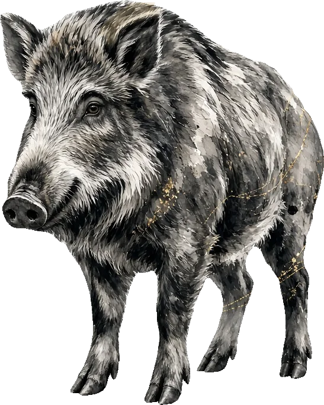

WILDLIFE DAMAGE CONTROL
有害鳥獣対策とは何か
「狩猟」のもうひとつの顔——農地と森を守るために、地域はどう動いているのか。制度・実施隊・報奨金・捕獲後のゆくえまで、公的資料に基づいて丁寧に解説します。

Definition
有害鳥獣とは何か
「有害鳥獣」とは、農林水産業や生活環境、人身に対して現に被害を及ぼしている、あるいは及ぼすおそれがあると判断された野生鳥獣の総称です。
法律上の正式な種区分ではなく、あくまで「その地域・その時点で被害を発生させている個体・群れ」を指す運用上の呼び方である点がポイントです。
同じニホンジカでも、被害の出ていない山奥の個体は有害鳥獣として扱われませんし、逆に非狩猟鳥獣であっても著しい被害があれば、
環境大臣・都道府県知事の許可を得たうえで捕獲の対象になることがあります。
代表的な対象種は、ニホンジカ・イノシシ・ニホンザル・アライグマ・ハクビシン・カラス類など。地域や被害の内容によって、
クマ類（人身被害・出没対応）やヒヨドリ・カモ類（農作物被害）が対象になることもあります。
対象種・頭数・期間・区域はすべて、市町村が発行する捕獲許可証（有害鳥獣捕獲許可）に明記され、
その範囲を超えた捕獲は狩猟であっても違法となる点に注意が必要です。
ひとことで言うと：「有害鳥獣」は種名ではなく、"いま・その場所で困った存在になっている個体" を指す運用上のラベルです。
同じ種でも、地域や状況によって有害鳥獣とされたりされなかったりします。
狩猟との違い
狩猟免許を取得すると、法律上は2つの捕獲活動に関われるようになります。ひとつは、毎年秋から冬にかけての狩猟期間中、
狩猟者登録さえしていれば自分の判断で行える「狩猟」。もうひとつが、狩猟期間の内外を問わず、
市町村長等の許可（鳥獣保護管理法に基づく捕獲許可）を受けて行う「有害鳥獣捕獲」です。
使う技術も免許も同じですが、法律上の根拠・実施できる期間・目的がまったく異なります。
狩猟
Hunting
猟期のあいだ、自分の判断で。
資源としての利用と、山の文化の継承のために。
狩猟者登録・狩猟税
有害鳥獣捕獲
Control
通年、市町村長等の許可を受けて。
農林業の被害と、地域の暮らしを守るために。
捕獲許可証・報奨金
| 比較項目 | 狩猟 | 有害鳥獣捕獲（許可捕獲） |
|---|
| 目的 | 資源としての利用・スポーツ・文化の継承 | 農林業被害・生活環境被害・人身被害の防止 |
| 実施できる時期 | 狩猟期間中のみ（原則11月15日〜翌2月15日） | 市町村が発行する許可証の有効期間内（通年も可） |
| 必要な手続き | 狩猟者登録・狩猟税の納付 | 市町村長等への申請と捕獲許可の取得 |
| 対象鳥獣・頭数 | 狩猟鳥獣46種、捕獲数制限あり | 許可証で個別に指定（非狩猟鳥獣が対象になることも） |
| 実施できる場所 | 鳥獣保護区等を除く狩猟可能区域 | 許可証に記載された区域内 |
| 報奨金 | 基本的になし（捕獲物は自己利用・販売可） | 市町村等から捕獲報奨金が支給される場合が多い |
出典：環境省「鳥獣の保護及び管理並びに狩猟の適正化に関する法律」の解説資料、農林水産省「鳥獣被害対策コーナー」公表資料をもとに作成。
なぜ深刻化しているのか
有害鳥獣対策がここまで社会的な課題になった背景には、いくつもの要因が複合しています。まず生物学的な要因として、
ニホンジカは年1回1頭という出産数ながら生存率が高く、天敵となるオオカミが絶滅した日本では個体数が急速に増えやすい構造にあります。
イノシシも年1回平均4〜5頭という高い繁殖力を持ち、条件が揃えば数年で生息数が倍増することも珍しくありません。
これに人間側の変化が重なりました。温暖化による積雪量の減少は、これまで越冬できなかった地域への生息域拡大を後押しし、
過疎化・高齢化による耕作放棄地の増加は、獣にとって身を隠せる緩衝地帯を野山と農地の境目に作り出しました。
そして皮肉なことに、その獣害と最前線で向き合うはずの狩猟者自身が、担い手不足によって減少・高齢化しているのです。
「獣は増える、対処する人は減る」という二重の悪循環が、令和6年度の農作物被害額 約188億円（うちシカ79億円・イノシシ45億円）
という数字に表れています。
-
ニホンジカ
79億円
-
イノシシ
45億円
-
その他の鳥獣
64億円
出典：農林水産省「全国の野生鳥獣による農作物被害状況（令和6年度）」。
「その他の鳥獣」は総額からシカ・イノシシの被害額を差し引いた値です。横棒の長さは総額に対する割合を表します。
被害は経済的損失だけにとどまりません。せっかく育てた作物を収穫直前に食べ荒らされる体験は、農家の営農意欲そのものを削ぎ、
離農や耕作放棄をさらに加速させる要因にもなります。有害鳥獣対策は、単なる「駆除」ではなく、
地域の農業と暮らしを維持するための予防的な地域経営そのものだと理解すると、その重要性がよく見えてきます。
根拠となる法律・鳥獣被害防止特措法
有害鳥獣対策の骨格を定めているのが、2007年（平成19年）に制定された「鳥獣による農林水産業等に係る被害の防止のための特別措置に関する法律」
（通称：鳥獣被害防止特措法）です。深刻化・広域化する鳥獣被害に総合的かつ効果的に対処するため、
市町村が主体となって被害防止計画を策定し、実践的な対策を進める枠組みが定められました。
この法律に基づき、市町村は「鳥獣被害防止計画」を策定し、対象鳥獣の種類、捕獲目標、防護柵の設置計画などを定めます。
国はこの計画を後押しするため、「鳥獣被害防止総合対策交付金」を通じて、捕獲活動費・侵入防止柵の整備費・
処理加工施設の整備費などを財政的に支援しています。有害鳥獣対策は、市町村・都道府県・国が役割分担しながら
支える多層的な仕組みで動いているのです。
鳥獣被害対策実施隊という仕組み
鳥獣被害防止特措法に基づき、市町村が設置できるのが「鳥獣被害対策実施隊」です。捕獲や防護柵の設置といった実践的な活動を、
被害防止計画に沿って行う組織で、農林水産省の公表資料によれば令和7年4月時点で全国1,718市町村のうち1,266市町村が設置し、
42,950人が隊員として活動しています。
実施隊員は、市町村職員が兼務する場合と、地域の猟友会員など民間の狩猟者が任命される場合があります。
民間から任命された隊員は「非常勤の特別職地方公務員」として位置づけられ、次のような優遇措置が設けられています。
- 公務中の事故に対する公務災害補償保険の適用
- 狩猟税の減免（多くの自治体で原則50%）
- 銃猟に必要な技能講習の受講が免除される場合がある
- 隊員への報酬・補償措置の財源には、特別交付税による国の財政支援（8割程度）がある
つまり、狩猟免許を取って終わりではなく、その先に「地域の一員として公的な役割を担う」というキャリアパスが用意されているのが、
日本の有害鳥獣対策のもうひとつの側面です。
捕獲報奨金の3層構造
有害鳥獣を1頭捕獲するごとに支払われる「捕獲報奨金」は、多くの場合、次の3つの財源が積み重なって構成されています。
国・都道府県・市町村それぞれの制度が独立して存在するため、同じ「イノシシ1頭」でも、住んでいる自治体によって
受け取れる金額は大きく異なります。
| 財源 | 内容 | 目安 |
|---|
| ① 国（交付金） | 鳥獣被害防止総合対策交付金による支援 | 1頭あたり8,000円程度（イノシシ・ニホンジカ・ニホンザル対象、令和5年度実績） |
| ② 都道府県（上乗せ） | 都道府県独自の補助制度による加算 | 自治体により実施状況・金額が異なる |
| ③ 市町村（単独事業） | 市町村が条例・要綱で定める独自の報奨金 | 地域の被害状況により数千円〜1万数千円程度の幅 |
出典：農林水産省「鳥獣被害防止総合対策交付金実施要領」等の公表資料。市町村単独事業の金額はあくまで一般的な傾向であり、正確な金額は各市町村の要綱でご確認ください。
誤解しやすいポイント：「報奨金があるからハンターは儲かる」というイメージを持たれがちですが、
申請には尾や耳など捕獲個体の一部の提出・写真記録・GPS位置情報の提出など、自治体ごとに細かな証明手続きが必要です。
見回り・止め刺し・運搬・処理にかかる労力を考えると、報奨金単体を目的にした活動は現実的ではなく、
多くの実施隊員は「地域貢献」を主目的として活動しています。
捕獲された鳥獣のゆくえ
捕獲された鳥獣がその後どうなるかは、大きく分けて「食肉（ジビエ）としての利用」と「埋設・焼却による処分」の2つです。
農林水産省「野生鳥獣資源利用実態調査」（令和5年度）によれば、全国772か所の食肉処理施設が処理したジビエ利用量は
2,729トンで過去最高を記録し、前年度比31%増と急速に拡大しています。処理頭数で見るとシカ121,117頭、
イノシシ39,918頭、合計182,627頭が食肉として流通しました。
しかし、シカ・イノシシの年間捕獲頭数が合計で約124万頭（令和5年度）にのぼることを踏まえると、
食肉として利用されているのは全体のおよそ1割強にすぎません。残りの多くは、山中でそのまま埋設・焼却処分されているのが実情です。
これは、捕獲現場と処理加工施設の距離、搬入までの時間制限（食品衛生上、止め刺しから短時間での搬入が求められる）、
施設のキャパシティなど、複数の物理的な制約が重なった結果です。
裏を返せば、ここには大きな伸びしろがあります。ジビエ処理施設の整備、搬入ルートの効率化、狩猟者と処理施設をつなぐ
情報基盤の整備が進めば、「仕方なく処分される命」を「ごちそうとして届く命」に変えられる余地はまだ十分に残されています。
ジビエの魅力を知ることは、この構造を理解し、消費者側からこの循環を後押しすることでもあるのです。
有害鳥獣対策に参加するには
有害鳥獣対策の担い手になる王道ルートは、次の3ステップです。
狩猟免許を取得する
わな猟・銃猟いずれかの免許取得がすべての出発点です。獣害対策の主力はわな猟・第一種銃猟であることが多く、迷ったらこの2つが有力な選択肢です。→ 免許・費用ガイド
地元の猟友会に加入する
都道府県猟友会・その支部（市町村単位のことが多い）に加入すると、先輩ハンターから実地の技術を学べるほか、実施隊の募集情報や有害鳥獣捕獲の現場に触れる機会が得られます。ハンター保険への加入もここで案内されるのが一般的です。
実施隊員への任命・許可捕獲への参加
経験を積んだのち、市町村から鳥獣被害対策実施隊員として任命されたり、有害鳥獣捕獲の許可を個別に受けたりすることで、正式に地域の対策活動に加われます。募集の時期や条件は市町村ごとに異なるため、早めにお住まいの市町村窓口に相談しておくとスムーズです。
FAQ
よくある質問
有害鳥獣捕獲は誰でもできますか？
狩猟免許（わな猟・銃猟等）の取得が前提です。そのうえで市町村長等から個別に捕獲許可を受けるか、鳥獣被害対策実施隊員として任命される必要があります。免許を持たない人が単独で行うことはできません。
報奨金だけで生活できますか？
現実的には難しいのが実情です。報奨金は国の交付金（1頭あたり8,000円程度・令和5年度実績）に都道府県・市町村の上乗せを加えた金額ですが、見回り・運搬・書類手続きの労力を踏まえると、専業として成立させている人はごく一部です。多くの実施隊員は本業や年金と組み合わせて活動しています。
捕獲した鳥獣はどうなりますか？
食肉処理施設に搬入されればジビエとして流通しますが、令和5年度の全国のジビエ利用量は2,729トン・処理頭数182,627頭で、シカ・イノシシの年間捕獲頭数（約124万頭）全体からすると1割強にとどまります。残りの多くは、その場での埋設や焼却処分となっているのが現状です。
鳥獣被害対策実施隊員になるとどんな優遇がありますか？
市町村の非常勤特別職公務員として扱われ、公務中の事故に対する災害補償の対象になるほか、狩猟税の減免（原則50%）、銃猟技能講習の受講免除など、複数の優遇措置が設けられています。
都会に住んでいても有害鳥獣対策に関われますか？
直接の捕獲活動は現地在住・近隣在住者が中心になりますが、ジビエを購入して消費することも立派な支援のかたちです。また、二拠点生活や週末だけ農山村に通う形で実施隊活動に参加している例も各地にあります。まずは
ジビエから関わってみるのもひとつの入り口です。
地域に必要とされる担い手に、あなたもなれる。
すべての出発点は狩猟免許。まずは無料の試験対策アプリで、最初の一歩を踏み出しましょう。